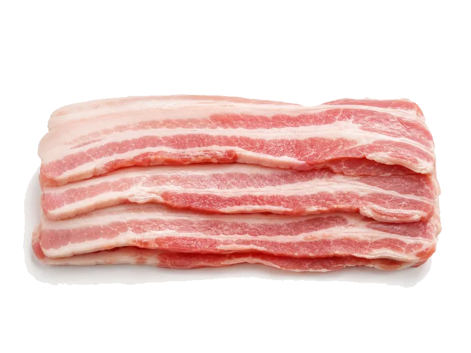

Mięsa i ryby
Boczek surowy
Boczek surowy: 12 g białka, 541 kcal, 0 g węglowodanów i 55 g tłuszczu na 100 g. Kategoria: Mięsa i ryby.
Kalorie541 kcalna 100 g
Białko / proteiny12 g
Węglowodany0 g
Tłuszcz55 g
Cena (szac.)~3,75 złza 100 g
Ceny zaktualizowano: maj 2026 (szacunek — ceny w popularnych supermarketach)
Porcja: plaster (20g)
| Kalorie | 108 kcal |
|---|---|
| Białko | 2.4 g |
| Węglowodany | 0 g |
| Tłuszcz | 11 g |
| Cena (szac.) | ~0,75 zł |
Szczegółowe składniki odżywcze na 100 g
| Wartość energetyczna (kalorie) | 541 kcal |
|---|---|
| Białko (proteiny) | 12 g |
| Węglowodany | 0 g |
| Tłuszcz | 55 g |
| Tłuszcze nasycone | 20 g |
| Tłuszcze nienasycone | 35 g |
| Witaminy i minerały | Sód, Żelazo, Cynk |
| Współczynnik kcal / 1 g białka | 45.1 |
| Cena produktu (szac. za 100 g) | ~3,75 zł |
| Cena za 100 g białka (szac.) | ~31,25 zł |